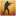
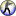

logic_eventlistener
Jump to navigation
Jump to search
 Bug:In singleplayer, the entity will stop working (firing outputs) after a save is reloaded, and must be respawned with a point_template. [todo tested in ?]
Bug:In singleplayer, the entity will stop working (firing outputs) after a save is reloaded, and must be respawned with a point_template. [todo tested in ?]
 : In code, it is represented by the CLogicEventListener class, defined in the logic_eventlistener.cpp file. It is a subclass of both CLogicalEntity and CGameEventListener.
: In code, it is represented by the CLogicEventListener class, defined in the logic_eventlistener.cpp file. It is a subclass of both CLogicalEntity and CGameEventListener.
| CLogicEventListener |
logic_eventlistener is a logical entity available in all  Source games since
Source games since  Portal 2. (also in
Portal 2. (also in  ).
).
It can listen to events fired from code and fire and output when it happens.
All event declarations can be found in these files:
resource/gameevents.res resource/modeevents.res resource/demoimportantevents.res resource/serverevents.res resource/hltvevents.res resource/replayevents.res
More detailed descriptions of the GameEvents can be found linked on the Vscript page.
Keyvalues
- Name (targetname) <string>
- The name that other entities refer to this entity by, via Inputs/Outputs or other keyvalues (e.g.
parentnameortarget).
Also displayed in Hammer's 2D views and Entity Report. - See also: Generic Keyvalues, Inputs and Outputs available to all entities
- Event Name (eventname) <string>
- The name of the event that you want to listen for.
- Fetch Event Data (fetcheventdata) <boolean> (in all games since

) (also in ) - Copies the game event data to the
event_datatable in the script scope of the listener entity when the event is fired.
- Team Number (teamnum) <integer>
- If set, will only fire its output if the event is generated from someone of the specified team.
- -1: Don't care
- 0: Unassigned !FGD
- 1: Team 1
 , Spectators
, Spectators 
!FGD - 2: Team 2 (ORANGE) , Terrorists , RED , Combine , Allies
- 3: Team 3 (BLUE) , Counter-Terrorists , BLU , Rebels , Axis
- Start Disabled (StartDisabled) <boolean>
- Stay dormant until activated (with the
Enableinput).
Inputs
EnableDisable:
- Enable / Disable <void>
- Enable/disable this entity from performing its task. It might also disappear from view.
Outputs
- OnEventFired
- !activator = !caller = NULL
Fired when the event has been detected.